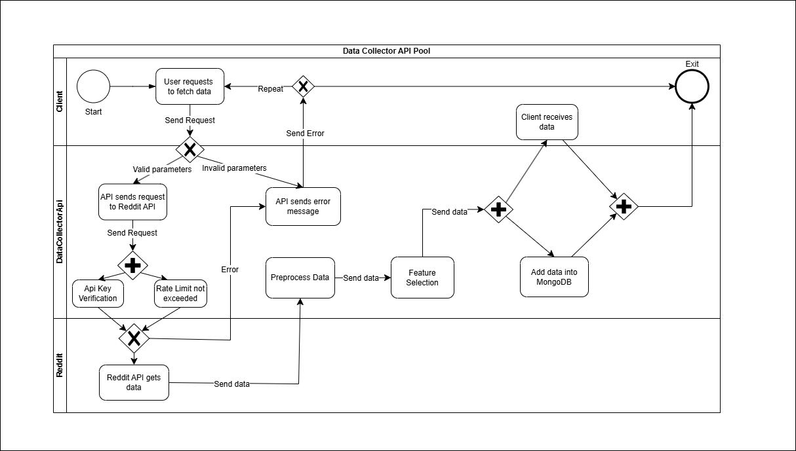
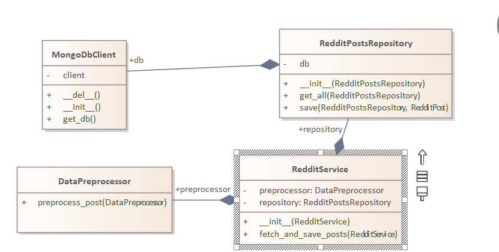
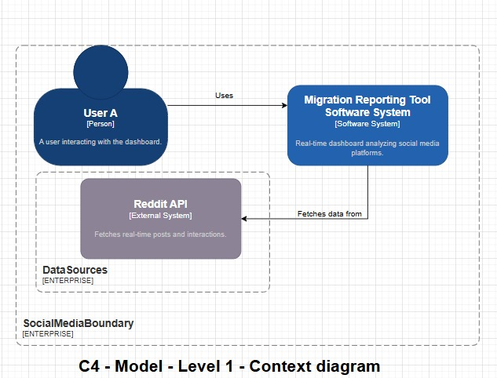
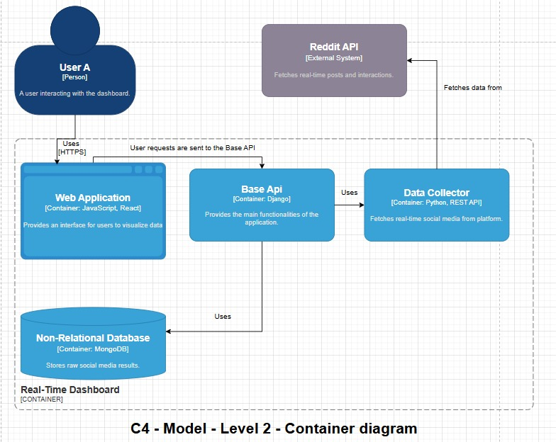
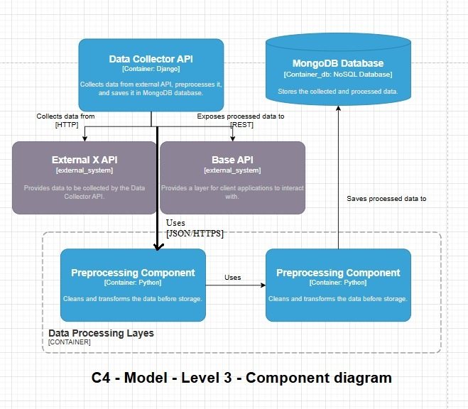

Introduction
The Migration Reporting Tool (MiRT) is an intelligent web system designed to visualize migration events of various entities (birds, humans, robots, extraterrestrial beings) in real-time using interactive maps. This report outlines the technical architecture, internal data models, API specifications, and the integration of external knowledge sources.
Internal Data Structures
MiRT manages multiple data structures to handle migration events, user interactions, and metadata. The core models include:
- TopicModeling: Aggregates data for generating statistics regarding comments on a given migration topic.
- MongoDbClient.py: Responsible for setting up and maintaining the connection to MongoDB. It provides an interface for other components to interact with the database.
- RedditComment.py: Defines the structure of Reddit comment objects, with methods to convert between objects and dictionaries, making it easier to interact with the database.
- RedditPost.py: Defines the structure of Reddit post objects, with fields like title, content, location, and keywords. This class also includes methods for converting posts into dictionary form for storage.
- RedditCommentsRepository.py: This class provides methods for querying, saving, and updating Reddit comments in the MongoDB database. It simplifies interactions with the Reddit comments collection.
- RedditPostsRepository.py: Similar to the RedditCommentsRepository, this repository handles interactions with the Reddit posts collection in MongoDB.
- RedditService.py: The service that connects to Reddit's API, fetches posts and comments, extracts relevant information (e.g., location, keywords), and saves the data in MongoDB. It is responsible for ensuring that all data is processed and stored correctly.
Data Collector API Overview
The Data Collector API is responsible for gathering, processing, and storing data from various Reddit posts and comments related to migration topics. It fetches data from selected subreddits like "birding," "aliens," and "IWantOut," processes this data (e.g., extracting location, keywords, and media), and saves it into MongoDB for later analysis.
Key Files and Their Roles
- DataPreprocessor.py: Contains methods to preprocess and clean the text data from Reddit posts and comments before saving them. This ensures that only meaningful and structured data is stored in the database.
- MongoDbClient.py: Responsible for setting up and maintaining the connection to MongoDB. It provides an interface for other components to interact with the database.
- RedditComment.py: Defines the structure of Reddit comment objects, with methods to convert between objects and dictionaries, making it easier to interact with the database.
- RedditPost.py: Defines the structure of Reddit post objects, with fields like title, content, location, and keywords. This class also includes methods for converting posts into dictionary form for storage.
- RedditCommentsRepository.py: This class provides methods for querying, saving, and updating Reddit comments in the MongoDB database. It simplifies interactions with the Reddit comments collection.
- RedditPostsRepository.py: Similar to the RedditCommentsRepository, this repository handles interactions with the Reddit posts collection in MongoDB.
- RedditService.py: The service that connects to Reddit's API, fetches posts and comments, extracts relevant information (e.g., location, keywords), and saves the data in MongoDB. It is responsible for ensuring that all data is processed and stored correctly.
Data Collection Flow
- Fetch Posts: The RedditService fetches posts from different subreddits such as "birding," "aliens," and "IWantOut." It can be extended to handle other subreddits.
- Extract Data: For each post, the service extracts comments, processes the text, and extracts additional data such as keywords and location using the DataPreprocessor and RedditComment classes.
- Store Data: The RedditPostsRepository and RedditCommentsRepository classes save posts and comments to MongoDB for later analysis.
- Location Extraction: The RedditService uses a geolocation service (e.g., Geopy) to extract location coordinates from text, which are stored alongside the post and comment data.
Example of Data Flow
- The service fetches a Reddit post from the "birding" subreddit.
- It then extracts comments from that post, cleans the text using the DataPreprocessor class, and identifies keywords such as "bird" and "migration."
- The service extracts the location mentioned in the post or comment using the RedditService and saves this information alongside the post and comment data.
- All data is stored in MongoDB, which can then be queried for analysis, reporting, or visualization.
This structure ensures that the data collected from Reddit is clean, well-structured, and ready for further analysis, such as migration event tracking or user sentiment analysis.
Business Process Model (BPMN)
The following diagram illustrates the business process flow for data collection:
UML Diagram
The following UML diagram shows the system's design and class structure:
C4 Diagrams
Context Diagram (Level 1)
This diagram shows the overall system and its interactions with external entities:
Container Diagram (Level 2)
This diagram provides a detailed view of the system's containers and their responsibilities:
Component Diagram (Level 3)
This diagram breaks down the containers into individual components, illustrating their interactions:
Topic Modeling Details
The TopicModeling module is responsible for analyzing comments related to migration events. It uses Latent Dirichlet Allocation (LDA) to identify hidden topics and generate statistical insights.
Environment Setup
Install the necessary Python packages:
pip install pandas pyLDAvis gensim nltk spacy wordsegment contractions requests python-dotenvDownload required NLTK resources:
import nltk
nltk.download('punkt')
nltk.download('stopwords')
nltk.download('wordnet')For API integration, create a .env file inside the TopicModeling directory and add your API key from
Google AI Studio:
API_KEY=your_api_key_hereCode Structure
- main.py: Initializes and runs the LDA topic modeling pipeline.
- lda_model.py: Manages LDA model training and optimization.
- preprocessor.py: Handles text cleaning, tokenization, and stopword removal.
- get_topic_name.py: Uses the Google Gemini API to assign descriptive names to detected topics.
- lda_visualisation_numTopicsNR.html: Provides interactive visualizations of topic distributions.
- trainig_data_collector.py: Aggregates raw data from various sources into training datasets.
- SavedModels/: Stores trained LDA models for future analysis.
Workflow Overview
- Preprocess comments using
preprocessor.py. - Train the LDA model with
lda_model.py. - Generate topic names via
get_topic_name.py. - Visualize topic distributions with
lda_visualisation_numTopicsNR.html.
This structure helps MiRT provide deeper insights into migration-related discussions through automated topic discovery and analysis.
API Architecture
MiRT employs RESTful APIs to manage data interactions for comments and posts, allowing for CRUD operations on both entities.
Comments API
- GET /comments/ - Retrieves a list of all comments. (Endpoint:
comments_list) - POST /comments/ - Creates a new comment. (Endpoint:
comments_create) - GET /comments/{_id}/ - Retrieves a specific comment by ID. (Endpoint:
comments_read) - PUT /comments/{_id}/ - Updates an existing comment entirely. (Endpoint:
comments_update) - PATCH /comments/{_id}/ - Partially updates specific fields of a comment. (Endpoint:
comments_partial_update) - DELETE /comments/{_id}/ - Deletes a comment by ID. (Endpoint:
comments_delete) - GET /comments/{post_id}/ - Retrieves comments related to a specific post. (Endpoint:
comments_read) - POST /comments/{post_id}/ - Creates a comment for a specific post. (Endpoint:
comments_create)
Posts API
- GET /posts/ - Retrieves a list of all posts. (Endpoint:
posts_list) - POST /posts/ - Creates a new post. (Endpoint:
posts_create) - GET /posts/{_id}/ - Retrieves a specific post by ID. (Endpoint:
posts_read) - PUT /posts/{_id}/ - Updates an existing post entirely. (Endpoint:
posts_update) - PATCH /posts/{_id}/ - Partially updates specific fields of a post. (Endpoint:
posts_partial_update) - DELETE /posts/{_id}/ - Deletes a post by ID. (Endpoint:
posts_delete)
All API endpoints return data in JSON format. For operations that modify resources (POST, PUT, PATCH), ensure the request body follows the expected schema, including required fields such as title, content, or text where applicable.
RDF-Based Knowledge Models
MiRT leverages RDF to structure and semantically enrich migration data. We utilize vocabularies from DBpedia and Wikidata to ensure data interoperability:
- Ontology Design: Defines classes like MigrationEvent, Entity, and Location.
- SPARQL Endpoint: Enables complex queries to explore migration patterns and relationships.
Use of External Data Sources
MiRT integrates external data from:
- Wikidata & DBpedia: For enriching migration events with contextual knowledge.
- Mockaroo: For generating synthetic data during testing phases.
- free-for.dev APIs: To incorporate additional geospatial and environmental data.
Example SPARQL Query:
SELECT ?species ?location WHERE {
?event rdf:type :MigrationEvent .
?event :species ?species ;
:location ?location .
FILTER(?species = "Bird")
}Linked Data Conformance
MiRT (Migration Reporting Tool) adheres to the core principles of Linked Data to ensure semantic interoperability, data integration, and enriched contextualization of migration-related information. This section outlines the key principles, implementation strategies, and benefits of Linked Data conformance within MiRT.
Principles of Linked Data
- Use URIs to Identify Resources: Each migration event, entity (such as birds, humans, robots), location, and metadata element within MiRT is assigned a unique Uniform Resource Identifier (URI). This ensures that each data element can be referenced unambiguously across systems.
- Make URIs Dereferenceable: The URIs are accessible via standard HTTP protocols, enabling users and applications to retrieve meaningful information about the resources through simple web requests.
- Provide Data in Standard RDF Formats: MiRT represents data in RDF (Resource Description Framework) format using standardized vocabularies from DBpedia, Wikidata, and custom ontologies specific to migration events. This promotes semantic consistency and facilitates data integration with external datasets.
- Include Links to External Datasets: Where relevant, MiRT connects internal data to external knowledge bases such as Wikidata, DBpedia, and GeoNames. This linkage enriches MiRT’s datasets with additional context, enhancing analytical capabilities.
Implementation in MiRT
RDF Data Model
MiRT's RDF data model defines key classes and properties for representing migration events:
- Classes:
:MigrationEvent(with properties like:date,:species,:location):Entity(covering individuals like:Bird,:Human,:Robot,:Extraterrestrial):Location(linked to geospatial identifiers via GeoNames or Wikidata)
- Properties:
:hasSpecies,:hasLocation,:observedAt,:reportedBy
Example RDF Triples
@prefix : <http://mirt.org/ontology#> .
@prefix dbo: <http://dbpedia.org/ontology/> .
@prefix wd: <http://www.wikidata.org/entity/> .
:migrationEvent123 a :MigrationEvent ;
:hasSpecies wd:Q5113 ; # Refers to "Bird"
:hasLocation wd:Q60 ; # Refers to "New York City"
:observedAt "2025-02-01"^^xsd:date ;
:reportedBy :RedditPost5678 .SPARQL Query Example
PREFIX : <http://mirt.org/ontology#>
PREFIX wd: <http://www.wikidata.org/entity/>
SELECT ?species ?location ?date WHERE {
?event a :MigrationEvent ;
:hasSpecies ?species ;
:hasLocation ?location ;
:observedAt ?date .
FILTER(?species = wd:Q5113) # Filter for "Bird"
}Benefits of Linked Data Conformance
- Enhanced Data Interoperability: Seamless integration with external knowledge bases like DBpedia, Wikidata, and GeoNames.
- Improved Data Discoverability: Publicly dereferenceable URIs enable easy data discovery and linkage by third-party applications.
- Richer Contextualization: Linking to external datasets provides additional context, enriching migration event analyses.
- Flexible Data Querying: SPARQL enables complex queries to uncover patterns, trends, and insights.
Linked Data Visualization
The following diagram illustrates how MiRT connects internal data with external datasets using Linked Data principles:

Conclusion
By adopting Linked Data principles, MiRT not only enhances the semantic richness and interoperability of its migration-related data but also positions itself as a valuable contributor to the broader Linked Open Data (LOD) ecosystem. This approach fosters collaborative research, data sharing, and comprehensive migration analysis across various domains.